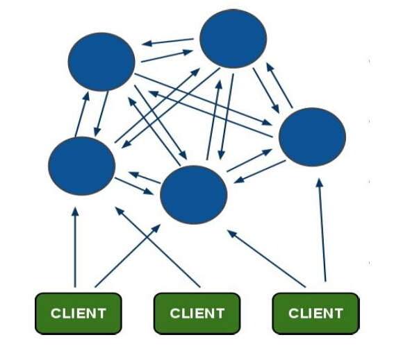

随着数据量的增加，redis集群变的越来越必要，本文主要介绍redis cluster的安装和配置。redis cluster是redis 3.0之后才引入的新功能，在之前的版本中实现redis集群主要使用twitter发布的Twemproxy。（https://github.com/twitter/twemproxy）
一：redis cluster介绍
redis集群是redis提供的分布式数据库方案，集群通过分片来进行数据的共享，并提供复制和故障转换功能。redis cluste在设计的时候，就考虑到了去中心化和去中间件，也就是说集群的所有节点都是平等的，每个节点保存各自的数据和整个集群的状态，每个节点和其他所有的节点相连，并且这些节点和所有节点保持联系，这样我们只需要连接集群中的任意一个节点就可以获取其他节点的数据。
redis cluster通过分片的方式保存数据库中的键值对：集群的整个数据库被分为16384个槽（slot）,每个分片对应一些槽，每个分片最少可以分配0个槽，最多分配16384个槽。当一个key进来时，会使用CRC16算法取key的hash值，然后对16384取模，然后根据模值，将key分配到对应redis分片上，具体公式为：CRC16（key）%16384.同时需要注意的是，要让集群正常工作至少需要3个主节点。假设我们现在已经有了3个节点组成的集群，A，B，C；并且3个节点分配的slot为：节点A，0-5460；节点B，5461-10922；节点C，10923-16383.假设我们现在需要设置一个key,比如my_name,按照redis cluster的哈希算法：CRC16（‘my_name’）%16384=2412,那么就会把这个key分配到节点A上。同样的，如果我们在集群中获取key=my_name的值时，也会跳转到B节点上获取数据。采用哈希槽的好处是：
- 1 结构清晰。如果我要新加一个节点D，只需要从原来集群中拿出一部分slot指派给节点D，同样的如果要删除一个节点，只需要把这个节点的slot分配给其他的节点。redis cluster的拓扑结构如下图所示：

redis cluster为了保证数据的高可用性，加入了主从模式，一个主节点对应一个或者多个从节点，主节点提供数据的存取，从节点负责数据的备份。当主节点挂掉之后，系统会从从节点中选出一个充当主节点，从而保证系统的可用性。在上面的例子中，如果没有为主节点配置从节点，那么当一个主节点挂掉之后，就无法再连接这个节点了。二：redis cluster配置
我们按照官方的教程，在一个机器上启动6个节点，3个为主节点，3个为从节点。 1 解压
1tar zxvf redis-3.0.5.tar.gz2 安装
12cd redis-3.0.5make && make install3 将redis-trib.rb复制到/usr/local/bin
redis-trib.rb是作者用ruby写的控制集群的脚步。12cd src/cp redis-trib.rb /usr/local/bin4 搭建集群
修改redis的配置文件1234567vi redis.conf#修改以下地方port 7000cluster-enabled yescluster-config-file nodes.confcluster-node-timeout 5000appendonly yes
新建6个节点：
将redis.conf分别拷贝到这6个文件夹中，并修改对应的端口号，并启动这个6个节点
将这个6个节点构成一个集群，需要用到的命令就是redis-trib.rb，这个是ruby写成的，首先你要下载ruby，然后再下载uby和redis的连接包。
- 5 启动节点1redis-trib.rb create --replicas 1 127.0.0.1:7000 127.0.0.1:7001 127.0.0.1:7002 127.0.0.1:7003 127.0.0.1:7004 127.0.0.1:7005
redis-trib会提示你需要做什么配置，输入yes接受，集群就被配置和加入了。测试集群的状态：
- 6测试连接集群
由于redis cluster的特点是去中心化，因此每个节点都是对等的，你连接任何一个节点都可以获取和设置数据。reids-cli是redis默认的客户端工具，启动时加‘-c’参数，开启redis cluster模式,通过加入-c命令，可以在输入的键值不在指定端口时，自动跳转到对应的端口。123redis-cli -c -p 7000set my_name testRedirected to slot [12803] located at 127.0.0.1:7002
通过前面的介绍我们知道，在分配key的时候，他会使用CRC16算法，%16384来计算key的值，并将key分配到负责的slot上。由于负责该slot的分片不在7000上，所有直接跳到了7002该分片上。
三：redis cluster测试
如果7000主节点挂掉，由于7000下的从节点只有7003一个，那么7003就会被选举我master，并且数据不会丢失。如果7000节点重新起来，他将会成为7003的从节点。
将新节点加入集群的命令是add-node：
7006是新加入的节点，7000表示集群的一个点，用来标示加入哪个集群，理论上集群中的任何节点都可以。加入集群之后，你会看到7006作为了master节点，但是他负责的slot为0，也就是说还没有分配任何槽给他，他不负责数据的存取。redis cluster在新节点加入的时候，不做迁移工作，需要我们对集群进行重新的分片迁移。
7000用来表示是哪个集群，端口填集群中的任何一个都行。之后集群会提示“How many slots do you want to move (from 1 to 16384)?”表示需要移动多少个槽，输入你想要迁移的数量之后，集群会提示“What is the receiving node ID?”你接受的node id是什么。输入7006节点的id之后提示，“Please enter all the source node IDs.
Type ‘all’ to use all the nodes as source nodes for the hash slots.
Type ‘done’ once you entered all the source nodes IDs.
-Source node #1:”，redis-trib会询问你重新分配的原节点，也即你需要从哪些节点中取出你需要的槽到新节点。
新加一个从节点的命令是：
–slave表示新加入的节点是从节点，但这样加入的从节点是随机的，他会成为任何一个主节点的从节点。如果你想从节点为指定主节点的slave,你可以指定master的id.
–master-id表示要加入的主节点的id。
删除一个节点的命令是del-node.
需要注意的是，如果要删除的节点为从节点，那么cluster将会直接删除从节点。如果删除的节点是主节点，那么需要保证被删除的主节点负责的slot为0，如果slot不是0将会删除失败“Node 127.0.0.1:7007 is not empty! Reshard data away and try again.”，再删除之前需要先把slot分配给其他的主节点。